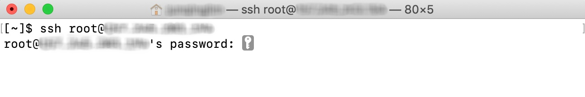
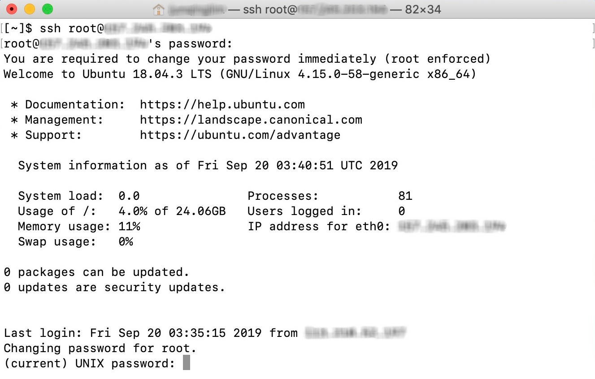
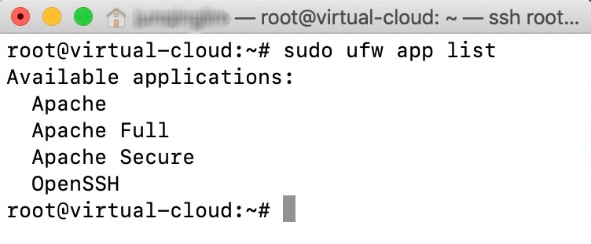
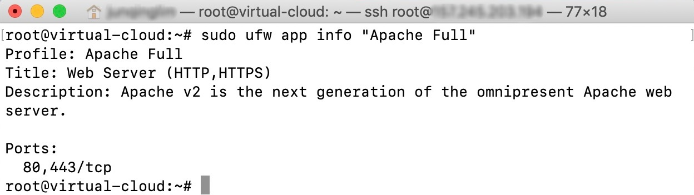
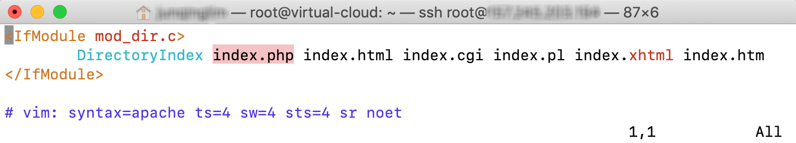
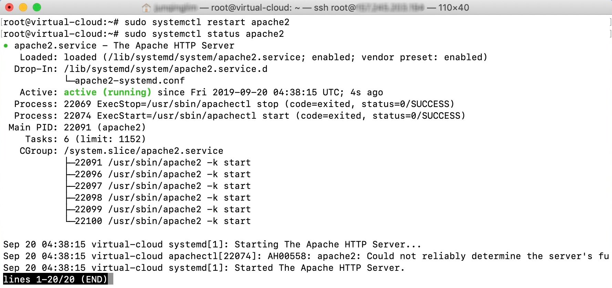

Installing Linux, Apache, MySQL, PHP (LAMP) stack on Ubuntu server
Note: The operations below are often executed with root privileges (aka sudo). It may requests for the user's password to verify its authenticity.
There are generally various of installing OwnCloud, either through a LAMP stack or installing via snaped technology. Thus, in our tutorial, we would be running through a manual installation via LAMP stack.
Prerequisite: Some basic knowledge in bash commands
# Login to Server
Login to the server by typing the command below in a bash terminal along with the password of the server where server_ip is the IP address of the virtual server created. Note that if the one-time password option is selected as the authentication method, the password will be emailed to you.
ssh root@server_ip

The terminal profile should look like this when logged in.

# Install Apache2 HTTP
Update the apt package manager and install apache2
sudo apt update
sudo apt install apache2
sudo ufw app list

Ensure the firewall allows HTTP and HTTPS traffic
sudo ufw app info "Apache Full"

# Install MySQL as Database
Install MySQL database management system as server database
sudo apt install mysql-server
sudo mysql_secure_installation
- Enter current password for root (Enter for none): Press Enter
- Set root password? [Y/n]: Y
- New password: Enter password
- Re-enter new password: Repeat password
- Remove anonymous users? [Y/n]: Y
- Disallow root login remotely? [Y/n]: Y
- Remove test database and access to it? [Y/n]: Y
- Reload privilege tables now? [Y/n]: Y
# Install PHP
Install PHP packages
sudo apt install php libapache2-mod-php php-mysql
dir.conf file in a text editor (vim or nano) and move the index.php to point next to DirectoryIndex
sudo vim /etc/apache2/mods-enabled/dir.conf

Restart PHP server to account for the changes and check the status
sudo systemctl restart apache2
sudo systemctl status apache2

Proceed To Setting Up ownCloud